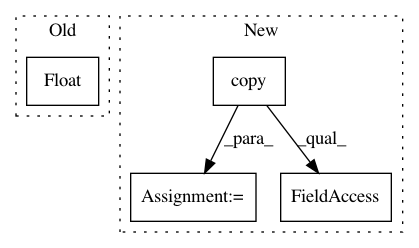

afd38df1eff037f0d27168320616533dc1ab189c,GPy/util/univariate_Gaussian.py,,std_norm_cdf,#Any#,11
Before Change
return_val = 0.5*(1.0 + sign*erf);
x = float(x)
return weave.inline(code,arg_names=["x"],support_code=support_code)
def inv_std_norm_cdf(x):
After Change
Based on Abramowitz, M. and Stegun, I. (1970)
//Generalize for many x
x = np.asarray(x).copy()
cdf_x = np.zeros_like(x)
N = x.size
support_code = "//include <math.h>"
code =
double sign, t, erf;
In pattern: SUPERPATTERN
Frequency: 3
Non-data size: 4
Instances
Project Name: SheffieldML/GPy
Commit Name: afd38df1eff037f0d27168320616533dc1ab189c
Time: 2013-10-17
Author: alan.daniel.saul@gmail.com
File Name: GPy/util/univariate_Gaussian.py
Class Name:
Method Name: std_norm_cdf
Project Name: SheffieldML/GPy
Commit Name: 28c899926a9d86395160bbfac975f03f7e6d448d
Time: 2014-01-24
Author: james.hensman@gmail.com
File Name: GPy/util/univariate_Gaussian.py
Class Name:
Method Name: std_norm_cdf
Project Name: glm-tools/pyglmnet
Commit Name: fb4b9023f9ec516648d58b4ba2ecd8e241e21618
Time: 2016-11-16
Author: pavan.ramkumar@gmail.com
File Name: pyglmnet/utils.py
Class Name:
Method Name: tikhonov_from_prior